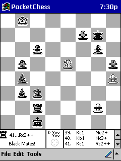
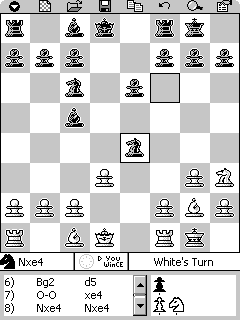

| Released: | 11/12/98 |
| Updated: | 10/04/2000, v. 1.1 |
| WinCE: | CE 2.x, and above |
 |
6 out of 6 orbs from CELair!! |
 |
5 of 5 cows from CEMonster!! |
PocketChess v1.1 for PocketPC is a high quality, well featured Chess playing program for your PocketPC! Also compatible with Windows CE Palm-sized PC's. Also available for Windows CE Handheld PC here.
- Play against the computer or a friend.
- Choose from 8 levels of skill.
- Export to PGN
- Many other features including a simple and intuitive user interface, save & load games, opening move libary, board setup, full move list, list of captured pieces, copy moves to clipboard, undo, hint, reverse board, switch sides, start as black, sound effects, full help, and others!
I offer the fully featured version of PocketChess to download and ask that you register PocketChess here for $15 to support PocketChess development.
 Download PocketChess v1.1 For PocketPC
Download PocketChess v1.1 For PocketPC
Below are screen shots of PocketChess for PocketPC and Palm-sized PC. PocketChess makes full use of the available screen space on a Palm-sized PC, providing a full size board with no compromises while also on the same screen including a toolbar, access to full menus, detailed game status, a full move list, and a list of the pieces captured.
PocketPC screen shot:

More PocketPC screenshots!
{kind=link}
{kind=link}
{kind=link}
{kind=link}
Palm-sized PC screen shot:

More Palm-sized PC screenshots!
{kind=link}
{kind=link}
{kind=link}
{kind=link}
Written by Robert Ryan (robert.ryan@mindspring.com) and Scott Ludwig (scottlu@eskimo.com). Please send feedback!
Chess set graphics by Christian Morency (morency@palmtime.com).
If you are looking for PocketChess v1.0 for Handheld PC, look here.